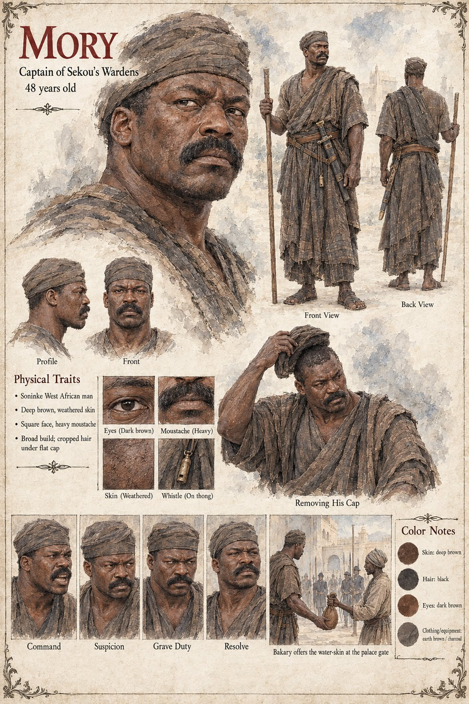

Mory
Captain of Sekou's wardens · the captain the water-skin was offered to · 48 years old on his sheet
A captain of Sekou's wardens, who had been shouting longest on the morning of the ninth of Kerren, when the wardens are quartered in the lower town and have come up to the palace gate with no plan. Bakary, twenty-two, comes down from the upper gallery with a water-skin over his shoulder, because it is a hot dry morning and the wardens have been shouting for an hour, and offers it to him. A boy on the wall throws a spear at the captain. It misses him by a hand, and hits the water-carrier.
He appears once more, at the end. When the wardens find Kolo in the yard at midday on the first morning of Averin, Captain Mory, who had been among the first to reach the palace gate on the morning Bakary died, looks at the man and the animal and the yard for as long as it takes to understand what he is seeing, takes his own cap off and goes to fetch the king. The manuscript does not say whether he sits on the captains' council, or what he does in the war between.
The manuscript gives his rank, his shouting, his cap and his errand; no age, face or build. The sheet's age of 48, deep brown weathered skin, square face, heavy moustache, broad build, cropped hair under a flat cap, brass whistle on a thong and earth-brown wrapper are its own, as are its panels Command, Suspicion, Grave Duty and Resolve and its scenes Bakary offers the water-skin at the palace gate and Removing His Cap.
“took his own cap off”